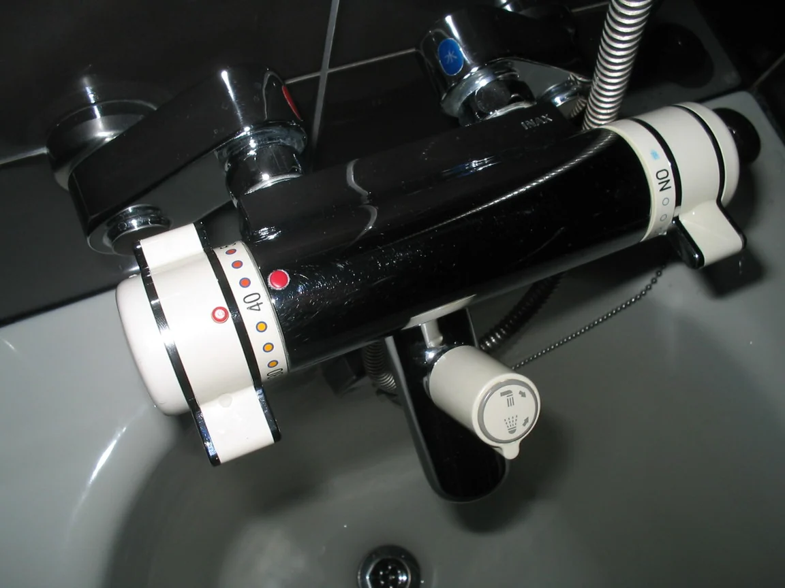
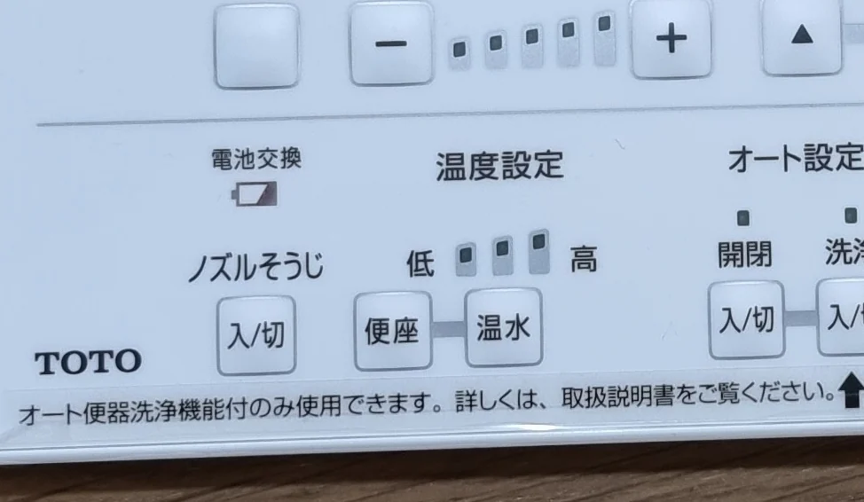
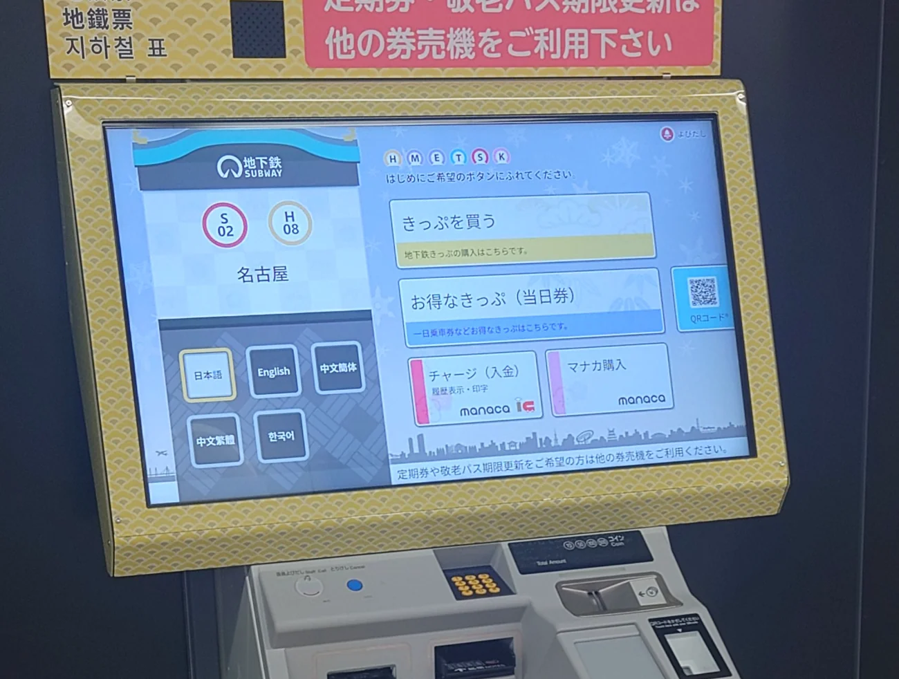
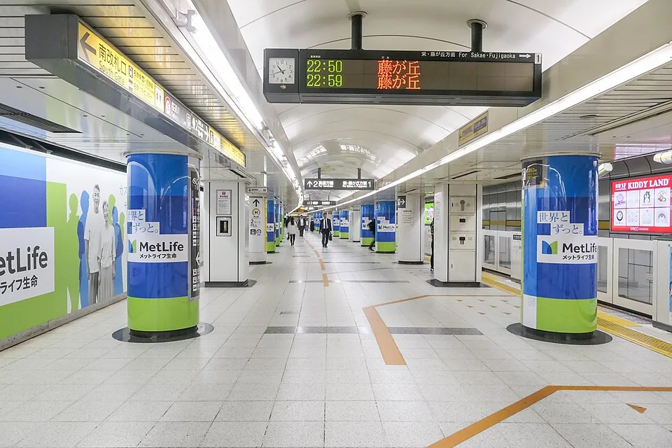
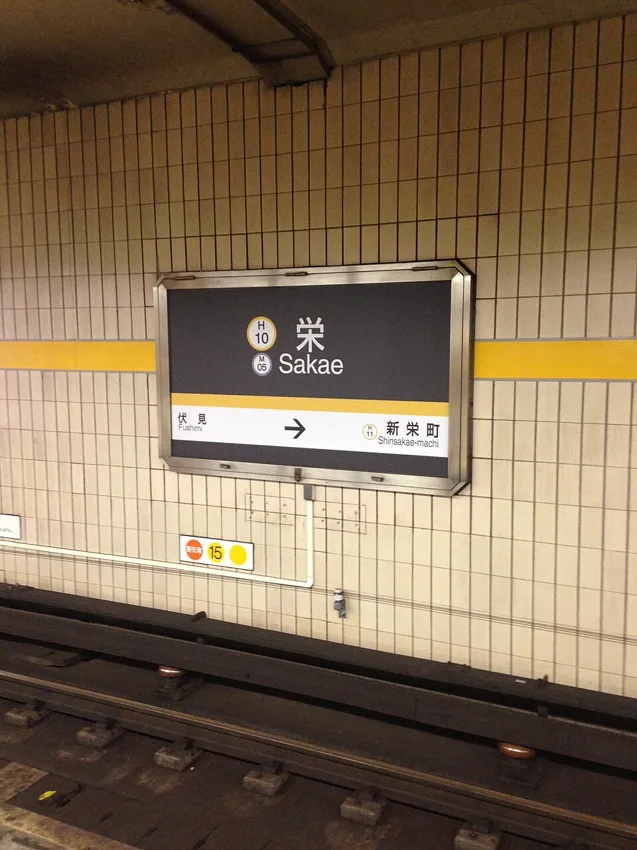
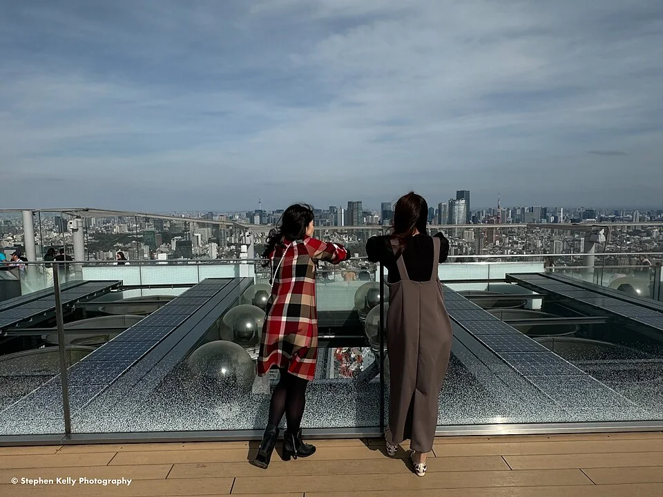
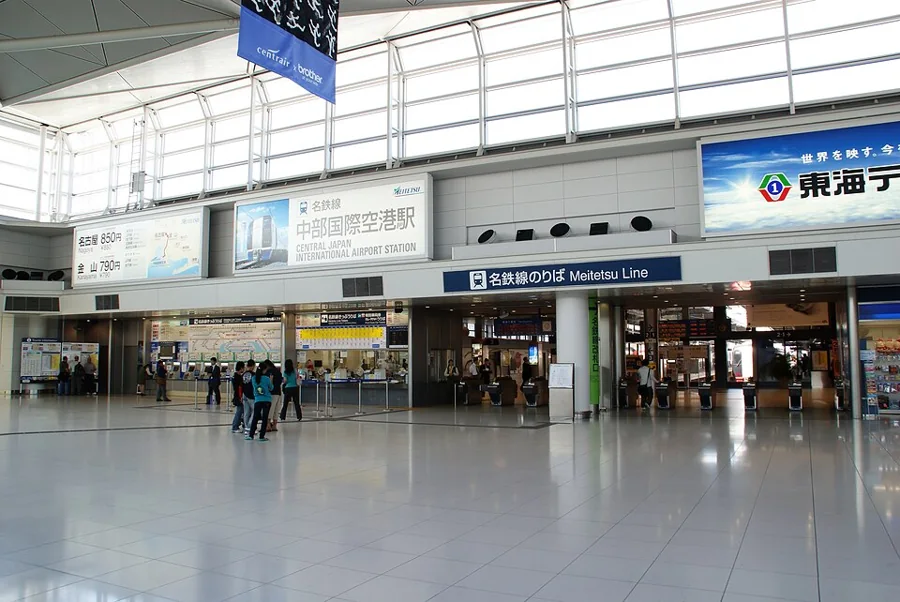
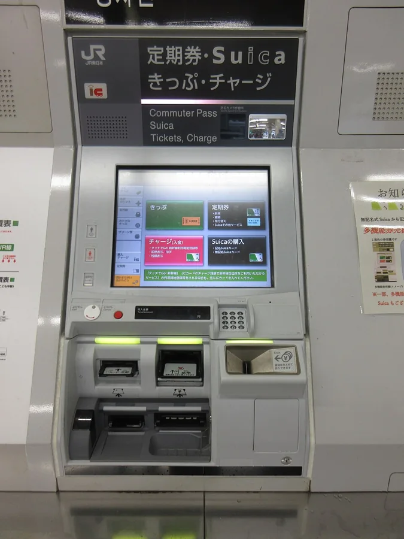
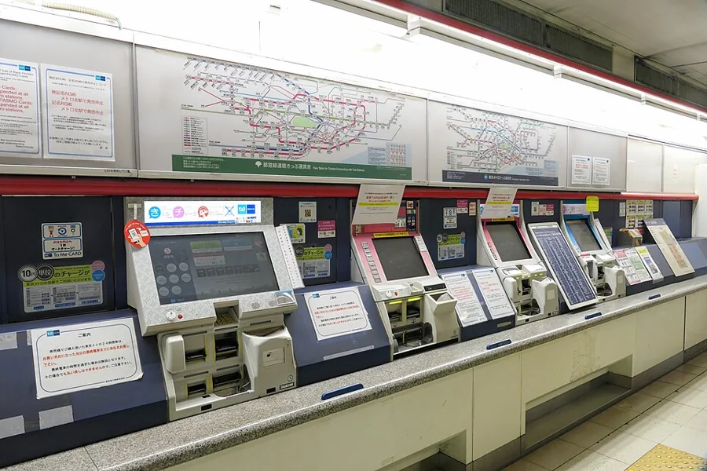

How to
Warm your hotel room
At APA Hotel Nagoya Ekimae and APA Hotel Kayabacho Hatchobori Ekimae, look for the air-conditioning controls on the bedside panel. Use the photos to match the labels. The layout may differ in your room. If your room has a key-card power slot by the door, insert your room key first.
- Switch the unit on. Look for ON/OFF or 運転／停止. If the display is already on, leave it on.
- Select heat if the panel offers a mode button. Press Mode or 運転切換 until the display shows 暖房 (heat). If there is a dedicated Heat button, press it once.
- Set the temperature above the current room temperature. Use the ▲ or + beside 設定温度. If the room is 19°C, try 22°C. Give it a few minutes to blow warm air, then adjust one degree at a time. Press ON/OFF when you’re finished.

Room controls: APA Nagoya, APA Kayabacho, Narita Tobu’s reply about heating.
Use the shower and warm the bathroom
For warmer water, start at the faucet. To warm the CR itself, look for a separate bathroom heater panel. The toilet may have its own seat-temperature setting.
Get warm shower water
- Point the showerhead into the tub or drain. On a temperature dial, start on the cool side of the 40°C mark. On a single mixer lever, start toward blue or C. If there are two taps, open cold first and add hot gradually.
- Choose the showerhead and start a gentle flow. Use the selector marked with a shower symbol or シャワー. If water comes out of the tub spout, switch the diverter to the shower position.
- Test the spray with your hand before stepping in. Move the temperature control a little toward red or H, wait for the water to settle, and test again. Leave any 40°C safety stop in place. If only hot or cold water comes out, turn it off and call reception.
- Turn the water off at the mixer. Return the flow control to OFF or 止 and check that the spray has stopped. With two separate taps, close hot first, then cold.

Warm the bathroom air
- Find the heater panel. Look near the bathroom door for 暖房 or 浴室暖房.
- Select heat with dry hands. Set a timer if offered and close the door while the room warms. If the panel offers a pre-bath mode (入浴前), use that before you get in.
- Press Stop when finished.
換気 runs the exhaust fan. If the only switches are the light and fan, ask the front desk whether that bathroom has a heater. A separate bathroom-air heater is unconfirmed for your three bookings.

Warm the toilet seat
Your two APA hotels list heated bidet seats.
- Find the seat control. Look on the toilet’s side panel or wall remote for 便座温度 (seat temperature), sometimes shortened to 便座.
- Choose a temperature. If adjustable, select 低 (low) and give the seat time to warm.
- Turn off seat heat. Choose 切 or OFF.
On this panel, 温水 sets the bidet spray’s water temperature. If you can’t find a seat setting, ask reception to show you the control for your model.

Equipment guides: APA bathroom fittings, TOTO bathroom heating, TOTO seat and spray settings (PDF).
How to ride the train
Your first subway ride is a simple one to practice. From APA Hotel Nagoya Ekimae, it’s two stops to Sakae, with no transfer. The line letter, station numbers and final destination are printed on station signs.
Read three things before choosing a platform: the line, the direction, and the next station. It works like following “Taft Avenue” on MRT-3. The correct side changes with your starting station. In Nagoya, follow the H yellow Higashiyama Line to the platform signed Fujigaoka. The next stop after Nagoya H08 should be Fushimi H09. If the sign shows Kamejima H07 next, follow the arrows to the opposite platform. For the return, follow Takabata from Sakae H10 and look for Fushimi H09 again.
In Tokyo the colours belong to a different map. From your hotel stop at Kayabacho, the H silver Hibiya Line serves Tsukiji. The T sky-blue Tozai Line connects to the G orange Ginza Line at Nihombashi. Match the letter and station number as well as the colour. Tokyo Metro map.
- H08 Nagoya
- H09 Fushimi
- H10 Sakae
-
Find the yellow H at Nagoya Station. Walk from the hotel to the Taiko-dori side of the station, then follow the public passage and signs for Subway / Higashiyama Line. Allow time to cross the station. If stairs are difficult, follow the elevator symbol or show staff your destination, Sakae (栄). Open the hotel-to-Sakae directions.

Nagoya · 名古屋. Look for this station name and the yellow line color. -
Choose one way to pay per person. You can use a loaded manaca, a supported contactless bank card or a paper ticket. For a ¥210 adult single ticket, choose English at the ticket machine, select the fare, pay in yen cash and take the ticket and change. How to get and reload a transit card.

Choose English on the left to buy a paper ticket. -
Go through the gate. With manaca, tap the IC pad like you would a beep card. With a supported bank card, tap the bank-card reader at a marked gate. With a paper ticket, insert it in the gate and pick it up as you pass.

At Tsurumai Station, the yellow floor panel marks an IC-only lane. Look for the matching payment symbol at your gate. -
At Nagoya (H08), board toward Fujigaoka. Look for platform 1 and check the destination display. Stand behind the safety line, in the queue beside a door mark. Keep the doorway clear for people getting off. When you hear an approach tune, stay behind the line. Let people off, then board once the doors are open. Hear the two Higashiyama tunes.

At Nagoya, check the overhead display and wait beside the door markings. -
Stay on at Fushimi (H09). Get off at Sakae (H10). Check the display above the door or listen for “Sakae.” For the East Gate, use elevator A at the east end of the Higashiyama platform. Tap out with the same card or device you used to enter. With a single ticket, insert it at the exit gate, which keeps it. If the gate stops you, show the attendant your card or ticket. Sakae platform and elevator guide.

Sakae · 栄. Get off here for the shopping district. - To get back to the hotel, reverse the direction. At Sakae take the yellow H from platform 2 toward Takabata. Pass Fushimi, get off at Nagoya and follow Taiko-dori Exit signs. For a paper fare, buy a new ticket for the return.
Check your last connection before 11 p.m. Some final departures are in the 11 p.m. hour, and the last train varies by line, direction and day. For your Sakae outing, Nagoya’s published timetable lists 00:02 toward Takabata and 00:16 toward Iwatsuka. Both serve Nagoya Station. The latter arrives at 00:20. Check the operator’s timetable and service notices the day you ride. Higashiyama first and last trains.
Get to SHIBUYA SKY from the Tokyo hotel
Can commute Allow about 35–50 minutes one way from APA Hotel Kayabacho Hatchobori Ekimae to the 14F entrance, including station walks and a transfer. Add time for elevators and entry. Your November 26 plan has dinner at 18:00 and you leave Tokyo early the next morning. Choose a time slot only if it fits around work and dinner.
- Check tickets first. Open the official ticket page, choose the booking option for visitors residing outside Japan and check your date and timed entry. For a November 26 overseas booking, bring each visitor’s original passport and match the name and passport number to the reservation. Keep the booking confirmation handy. The rooftop can close in poor weather.
- Take the subway. At Kayabacho T11, take the sky-blue Tozai Line toward Nakano one stop to Nihombashi T10. Follow the orange G signs to G11 and board toward Shibuya. Stay on until Shibuya G01.
- Find the entrance. From the Ginza Line, use the gate marked Shibuya Scramble Square and turn left after that gate. Follow the elevator signs to the building’s 1F SHIBUYA SKY elevator and ride to the 14F entrance. B6 is the building’s underground entrance number. Use the signed lift route if stairs are difficult.
- Return to Kayabacho. Take the Ginza Line from Shibuya toward Asakusa. At Nihombashi G11/T10, change to the Tozai Line toward Nishi-funabashi and get off one stop later at Kayabacho T11. Check the last connection before going up to the deck.


Transit map · APA Tokyo → SHIBUYA SKY
Open APA Tokyo → SHIBUYA SKY in MapsOfficial timed tickets · Entrance and elevator maps · Weather and rooftop rules · Overseas visitor passport instructions · Other optional Tokyo stops
Get a Suica, PASMO or manaca card
For this trip, buy one manaca per person when you land in Nagoya on November 24. Load it with yen like a Philippine beep card. Use it for the subway to Sakae, then keep using it on participating Tokyo Metro and JR East trains. Buy the Nagoya–Tokyo Shinkansen ticket separately.
Already in Tokyo without a card? Get Suica at Tokyo Station or PASMO at Kayabacho Station.
Nagoya arrival · get manaca at Centrair
- From Terminal 2, follow the Train / Access Plaza signs to Central Japan International Airport Station. Face the Meitetsu gates and go to the ticket counter on the left.
- Ask for one adult, unregistered manaca. You can say マナカを一枚ください。 Manaca o ichimai kudasai. Hand over ¥2,000 in cash. That gives you ¥1,500 to spend and a ¥500 refundable deposit.
- Take your card and tap in for the airport train. For a reserved μ-SKY seat, also buy a μticket before boarding. Already at your hotel? Use the pictured ticket machine at Nagoya Station to buy manaca before your Sakae ride.

Tokyo Station · get a regular Suica
- At Tokyo Station, follow signs for JR East. Look for a black multifunction ticket machine displaying Suica, or ask at a staffed JR East ticket office.
- Choose English, open the Suica purchase menu and select the regular Suica Card. The named version is called My Suica.
- Choose a starting amount, insert yen cash and collect the card and change. A ¥2,000 purchase gives you ¥1,500 of fare balance after the ¥500 deposit.

Near your Tokyo hotel · get a regular PASMO
- Go to the ticket machines outside the gates at Kayabacho Station (H13 / T11), near APA Hotel Kayabacho Hatchobori Ekimae. Look for the pink PASMO name or select English on the machine.
- Tap PASMO → Purchase new PASMO → Purchase blank PASMO. A blank adult card skips name registration. The wording can vary by machine.
- Choose the amount, insert cash and take the card and change. Here too, ¥2,000 paid = ¥1,500 to ride + ¥500 deposit. Station staff can help if the purchase option is missing.

Reload and ride with the same card
At a machine marked IC, choose Charge / Top up (チャージ). Insert the card or rest it on the tray as pictured on the screen, select an amount and insert yen cash. Check the new balance and collect your card and change. At the gates, tap the same card when entering and leaving. If the exit gate shows insufficient balance, use the fare-adjustment machine or ask the attendant.
At the end of the trip: You can spend leftover manaca balance at participating convenience stores in Tokyo. Manaca refunds are handled by its issuing network in the Nagoya area. If you plan to return to Japan, you can keep the card.
Visitor cards. Welcome Suica and TOURIST PASMO have no deposit, last 28 days and leave any unused balance nonrefundable. Tokyo Station sells Welcome Suica at the JR East Travel Service Center. TOURIST PASMO is sold at designated Haneda and Narita airport locations. Since Narita is your departure airport, getting manaca on arrival gives you more use on this trip.
Prefer your phone? On a compatible iPhone, open Wallet, tap + → Transit Card, select Suica or PASMO and add yen with a supported payment card. On Android, check JR East’s supported device list for your exact model. A physical card works regardless of which phone you carry.
Centrair station layout and μticket · manaca purchase price · Where manaca works and refunds · JR East Suica sales · Suica amounts and top-ups · PASMO machine steps · Kayabacho station map · Welcome Suica sales · TOURIST PASMO sales · Apple Wallet setup
Use MariBank debit in Japan
For a shop purchase or yen from an ATM, bring your physical MariBank Philippines Mastercard and have enough pesos in your savings balance for the purchase or withdrawal plus any fee.
Pay at a shop
- Before you leave: Activate and unlock the card. In the MariBank app, go to Cards → Settings → Card Usage Control and check that overseas in-store payments and ATM withdrawals are allowed. Know your six-digit card PIN. If you have the combo card, select Debit Mode to spend from savings.
- Tap your MariBank debit card. Check the yen total and choose Card. A contactless payment can go through without a PIN. If the screen says Approved, you’re done. If it says Insert card, insert the chip. Enter your six-digit MariBank card PIN on the keypad only if prompted. Always choose Japanese yen (JPY) when the terminal offers JPY or PHP. This leaves the conversion to your card issuer.
- After payment: Take your card and receipt. Keep the JPY receipt and check the posted peso amount in the app. MariBank lists no added fee on overseas in-store purchases with the physical debit card. Overseas online merchant payments have a separate 2% fee, including purchases billed in PHP.
Prefer cash if a PIN is requested? Tell the cashier “Cash, please.” Wait for them to confirm the pending card payment is cancelled before handing over yen. This works the same way for MariBank debit and UnionBank credit.
MariBank card controls · Card PIN · In-store and online fees.
Withdraw yen from your peso balance
You can leave most of your trip budget in pesos until Japan. For cash already in your hand, compare how many yen a Philippine counter or Centrair’s T2 public 1F arrivals counter will give you after fees. Ask whether the desk accepts PHP. For money in MariBank, use the Seven Bank ATM in T2’s public 2F departures lobby or at a participating 7-Eleven. It withdraws yen from savings. Review the ATM fee on screen. Your card issuer determines the peso conversion when you choose JPY. Centrair cash-exchange counters.
- Insert your MariBank card at a Seven Bank ATM displaying Mastercard. Choose English → Withdrawal → Saving if it asks for the account. Seven Bank also shows a Skip option if you’re unsure. For MariBank, ATM cash comes from savings even if your combo card was in Credit Mode.
- Enter your six-digit card PIN, press Confirm, then select a yen amount, for example ¥10,000.
- If the screen offers a choice of billing currency, choose Japanese yen (JPY) and decline conversion to PHP. Either choice dispenses yen. Review the amount and any ATM operator fee before confirming. You can cancel if you don’t accept the quote.
- Collect the yen, card and receipt. Check the savings transaction in the app. MariBank currently lists ₱0 for an international ATM withdrawal and ₱50 for an international ATM balance inquiry. A Japanese operator can charge its own withdrawal fee.

Example withdrawal: If the conversion were ₱0.40 per yen and the ATM displayed zero fee, withdrawing ¥10,000 would use about ₱4,000. The illustration uses a made-up rate. Your posted debit uses the applicable rate and any fee you accepted.
Seven Bank’s illustrated ATM steps · MariBank fee schedule · Combo card ATM rules.
Traveler reports. One Filipino traveler reported successful tap payments and yen withdrawals in Japan. A creator also reported a fee-free withdrawal at a Japanese 7-Eleven in a reel that contains a referral code. These were individual transactions. Check the fee on your own ATM screen. Reddit report · Public Facebook reel.
Pay with a Philippine credit card
With the UnionBank Rewards Secured Credit Card, your security deposit backs your credit limit. For example, the bank’s advertised 90% limit on a ₱20,000 deposit gives you ₱18,000 in credit. A shop purchase uses that available credit, and you still pay the monthly statement. UnionBank’s secured card · Secured-card terms.
- Before paying: Activate the physical card, check your available credit in UnionBank Online, and make sure international in-store purchases are enabled. Match the Visa or Mastercard logo on your card to the logo at the counter. Have your card PIN ready in case the reader asks. UnionBank card controls.
- Tap your UnionBank credit card. Check the yen total and choose Card. If the tap shows Approved, you’re done without a PIN. The reader can still ask you to insert the chip and enter your UnionBank credit card PIN on the keypad. If you prefer, switch to cash before approval. Choose one-time payment if offered installments. If offered PHP or JPY, always pay in yen (JPY). Save the receipt and check the posted PHP amount.
- At billing time: Pay the full statement balance by the due date to avoid purchase interest on a normally paid-in-full account. The pledged deposit stays with the bank as collateral. For yen cash, use the MariBank debit procedure above. Withdrawing against an eligible UnionBank credit line is a cash advance, with a ₱200 bank fee, possible ATM fees and interest from the withdrawal date. UnionBank cash advance terms.
Fee references checked November 22, 2026. UnionBank fee table · Foreign transaction FAQ. A traveler also described using a Rewards Visa Platinum in Japan. Their post leaves the secured status unspecified. Traveler’s Reddit report.
How to claim Japan’s shopping tax refund
For your November 24–28, 2026 trip, pay the full price and register the purchase at the shop. At Narita Terminal 2, complete Customs confirmation before giving Cebu Pacific your bags. The shop or its refund provider then handles the payout.
At the shop
- Bring your original passport. If Japan admits you as a non-resident with Temporary Visitor status, bring the passport with your landing permission sticker when shopping. If you use an automated entry gate, ask immigration for the stamp or sticker before leaving arrivals.
- Ask before paying. At a participating shop, say 免税はできますか？ (Menzei wa dekimasu ka?, “Do you offer tax-free shopping?”). You need at least ¥5,000 before tax at the same shop on the same day. Combine purchases across shops only if their shared tax-free counter says they qualify.
- Show your passport and register the sale. Use the tax-free register or the shop’s service counter. Pay the tax-inclusive price and keep the receipt and refund slip. Follow the shop’s instructions to register a payout method. For example, UNIQLO gives you a QR code for J-TaxRefund, where you verify your passport and choose how to receive the money. UNIQLO’s illustrated instructions.
What could you get back? Suppose your UNIQLO clothes cost ¥5,000 before tax. At 10%, you pay ¥5,500. The tax is ¥500. UNIQLO lists a fee of about 10% of that tax, so the estimated refund is about ¥450. Other shops may charge different fees.
Keep everything on a refund receipt together. Buy gummies you’ll eat in Japan on a separate, ordinary receipt. Customs checks each transaction as a whole. Even one missing item can cost the refund on that entire receipt. If you used any of the tax-free food, drinks or cosmetics, tell a customs officer at the counter before using the kiosk. Japan Tourism Agency’s traveler FAQ.
Before bag drop at Narita T2
- Go to Customs Tax Refund with your bags. For your 19:00 flight on November 28, leave time for inspection and airline bag drop. Keep your passport, receipts and all the goods accessible, including purchases you plan to check. Customs confirmation must happen within 90 days of purchase.
- Scan your passport at the kiosk. You can also use Visit Japan Web in the departure lobby on the dedicated Customs_WiFi_For_TaxRefund network. The kiosk works without a phone. Japan Customs’ Wi-Fi details.
- Read the result before handing over your suitcase. Green means Customs confirmation is complete. Red means take your passport and goods to the inspection area and finish with the officer. Then continue to bag drop and security.

Receive the refund
Card, bank or app: follow the provider’s instructions on your refund slip. Timing varies by shop. If the money hasn’t arrived by the provider’s stated date, contact the shop or provider with your receipt. Cash: if the shop offers yen cash at Narita, use the payout kiosk that supports its provider. T2 has cash kiosks both before and after security, with different operators. Check the operator before passing security. Narita cash kiosks and supported providers.
Rules checked November 23, 2026. Japan introduced this refund method on November 1, 2026. Japan Tourism Agency’s tax-free shopping guide · Japan Customs departure procedure · Your airport transfer and flight.
Buy duty-free at Narita Terminal 2
On November 28, you can shop as a passenger departing Japan for Manila. At an airside duty-free shop, the shelf price already excludes the applicable Japanese duties and taxes. You pay that price and take the goods with you.
Find the right counter
First handle any city shopping refund before bag drop. Then check in with Cebu Pacific, clear security and departure passport control, and follow signs to Narita 5th Avenue on T2 Main Building, 3F. Look for Fa-So-La DUTY FREE Cosmetics & Perfumery Gate for perfume and skincare, or Fa-So-La DUTY FREE Liquor & Tobacco Gate for sake. Check your gate and boarding time before browsing.
- Pick the item. Match the label, size and yen price. For sweets, a souvenir shop such as JAL PLAZA may be more useful. Each shop carries its own selection.
- Go to the register. Have your international boarding pass and passport ready. Show the boarding pass when asked so the cashier can confirm your departing flight.
- Pay and collect. Pay the displayed total using a method the shop accepts. Take the item and receipt. If staff seal liquids in a security bag, keep it sealed and keep the receipt with it.
- For a Fa-So-La pre-order, use your confirmation email. Go to the pickup counter named in the email, give your name and order number, then pay and collect. Terminal 2 pickup counters vary by product.

Two purchases, two procedures. The ¥5,000 minimum and departure refund check in the previous guide apply to qualifying city purchases. At an airport duty-free till you can buy a single eligible item and finish the transaction there. Philippine arrival allowances and declaration rules still apply.
Duty-free eligibility · Cosmetics shop and map · Liquor shop and map · Pre-order and pickup · Philippine Customs arrival guide · Departure-day shopping stops
Photo credits and licenses
- Subway Nagoya-STA Higashiyama-Line Platform1 by MaedaAkihiko. Resized and converted to WebP. CC0.
- Nagoya Station Sign (Higashiyama Line) by そらみみ. Resized and converted to WebP. CC BY-SA 3.0.
- SHIBUYA SKY observation deck by Stephen Kelly. Resized and converted to WebP. CC BY 2.0.
- Centrair station entrance by JKT-c. Resized and converted to WebP. CC BY 3.0.
- JR East multifunction ticket machine by イコちゃん２００３. Resized and converted to WebP. CC BY-SA 4.0.
- Nishi-Shinjuku Station ticket machines by MaedaAkihiko. Resized and converted to WebP. CC BY-SA 4.0.
- Sakae Station Sign (Higashiyama Line) by そらみみ. Resized and converted to WebP. CC BY-SA 3.0.
- Ticketgates by アレックス. Resized and converted to WebP. CC BY-SA 3.0.
- Nagoya ticket machine by 円周率３パーセント. Cropped and resized. CC BY-SA 4.0.
- Seven Bank ATM at Toyosu Front, Tokyo by Nori Norisa, 2025. Cropped and converted to WebP. CC BY 4.0.
- Room heater remote by Nesnad. Cropped and converted to WebP. CC BY 4.0.
- Thermostatic shower mixer by M.Minderhoud at Dutch Wikipedia. Resized and converted to WebP. CC BY-SA 3.0.
- MAX bathroom heater panel by RuinDig/Yuki Uchida. Cropped and converted to WebP. CC BY 4.0.
- TOTO toilet-seat control panel by Benlisquare. Cropped and converted to WebP. CC BY-SA 4.0.

.jpg){kind=link}
.jpg){kind=link}


.jpg){kind=link}


The hotel-control photos include a highlight over the relevant button or dial. The adapted photos retain their respective licenses.